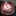
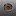

已丟棄的酒精爐
將一些做太失敗已經丟棄的酒精爐移駕至此。
索引
ALOCS愛路客酒精爐 (仿Trangia) #雙層加壓 網路購買 已丟棄
原本Trangia的設計就有點黃火了，這款燃燒效率也沒手工酒精爐好，也比小島爐耗費能源，就算不用它的爐架，本體還是不輕，沒有什麼特別的優勢。
網路上分析是因為雙層上緣蓋住的地方有縫隙，導致從孔洞噴出的酒精蒸氣壓力不夠，以至於燃燒效果不好。


當然這款效率還不是最差的，還有更便宜的燒起來效率都沒DIY的好的。
硬幣酒精爐(外側開孔＆內開孔加高爐壁) #封閉加壓 DIY 危險 已丟棄
YouTube搜尋Penny Stove有很多製作教學與燃燒影片。
中間小孔是洩壓孔，需要放置一塊錢壓住，使爐子維持高壓，達到小孔噴發的效果。
缺點是需要等待預熱，尤其爐體太高太大的狀況下，若氣溫冷，空氣缺氧都可能點失敗。且爐子壓力較大，若失敗後嘗試重新點燃，可能因為酒精蒸氣燃燒膨脹瞬間爆炸，使酒精液體噴發，是一款較危險需小心操作的酒精爐。




沙士鋁罐酒精爐 (外打孔內毛細失敗品) #雙層毛細 DIY 已丟棄
嘗試用沙士罐製作毛細酒精爐，外罐酒精盤，內罐外打燃燒孔，內層再額外疊一圈毛細層。
工具不妥，沒認真量高度，擠壓後毛細通道扭曲，燃燒效率又差，加墊棉布進去沒差太多，一整個又醜，就丟了。

魔爪仿貓罐酒精爐 (爐小空氣流通差效率不佳) #開放式 DIY 已丟棄
嘗試用魔爪罐製作貓罐酒精爐，此款設計可不用爐架，鍋子直接疊上去也可燃燒，但爐體小，空氣流通慢，預熱時間長，馬上疊爐子很容易熄火。
嘗試放入一圈鋁圈改善預熱速度，卻容易讓酒精小小亂噴有點危險。後來改用大一點的罐頭製作後此款就丟棄了。

雪碧仿貓罐酒精爐 (失敗品) #開放式 DIY 危險 已丟棄
嘗試用雙層結構打孔製作貓罐酒精爐，不妥當的雙層加打孔設計，導致酒精蒸氣在縫隙中流竄，點燃後火焰不穩，酒精容易亂噴，非常危險！！
IonStove #開放式 重量11g DIY 已丟棄
純粹的中心打孔與外層通氣孔，實際燃燒時意外的可以燒非常非常久，但火焰偏小，也因此煮水幾乎只能小滾或不太滾，實驗使用鍋子與燒異丙醇的狀況下，改用更小的爐架與杯子燒乙醇也許會有差異。
此類設計理論燃燒孔應該還是以中間為主，周圍的孔只是幫助進氣而已。所以中間開孔越小，火焰應該就越小，且更不容易點燃。
中心開孔為3cm：
參考此網頁製作教學製作而成：https://hikinghq.net/ionstove/build.htm
IonStove Remake (失敗品) DIY 已丟棄
嘗試重新依造上述網頁製作尺寸，並且改由波蜜鐵罐製作，這樣就有兩個平底。改用原設計燃燒效率比雪碧鋁罐還差，25ml異丙醇竟然燒了四十多分鐘。
後為了嘗試改善進氣，開始在周邊也打孔，但效果更糟了，火焰會以一種脈衝波的形式瞬間噴發、減小、噴發、減小。甚至嘗試周圍底部留空隙，也無法改善，真的是不能隨便亂打孔。
打了外層進氣孔後的模樣，已跟當初設計不同；中心開孔為一吋(2.58cm)

若捲了鋁圈放在中間，變雙層結構，燃燒效率會稍微變好，但火還是很小，且就離原本IonStove的設計越來越遠。
不知道網頁上的爐子設計為何可以正常運作，而且網頁上寫是鈦製，但鈦的導熱性也沒鋁好，而這次選擇的鐵罐是最差的，所以酒精爐的選擇上，材質也許也有影響；也或許有些設計沒有在網路上廣泛流傳的原因，是本身就非常難重現效果，某些眉角原作者沒提到之類的。
螺絲酒精爐 (失敗品) #封閉加壓 重量27g DIY 已丟棄
硬幣酒精爐(外側開孔＆內開孔加高爐壁)的變體，嘗試使用螺絲深入到酒精內加熱，加速預熱的作法。
不料不僅螺絲密封性差，酒精提早流進洞中，使得上層沒辦法作為預熱燃燒，需要額外的預熱盤先在外圍灑酒精點燃（但底部預熱盤比較安全沒錯）。
且一旦點燃後，鏍絲又加速內部快速蒸發導致一開始火焰過大，後面又瞬間過小，形成如芥末般，嗆一下就沒了的窘境！整個比硬幣酒精爐還廢！
看似合理的的設計，實則因為細節處理的差異，反而造成反效果！螺絲螺母還徒增重量！
網路上類似的封閉式爐體，其實應該是螺絲螺母要鎖緊或塗膠讓他不要產生空隙，並寫在側邊額外打個鎖孔可以填充酒精，而非直接沿用硬幣酒精爐讓他流進去的作法。
並且爐體小的狀況下其實應該也不需要螺絲加速預熱了，以避免酒精過度蒸發的問題。


波蜜鐵罐酒精爐 #開放式 重量38g DIY 已丟棄
類似貓罐酒精爐的增高版，直接將上下打兩排孔，上部留2~3cm燃燒空間，且需要在最頂部靠近鍋面處留幾個小排氣孔，避免酒精蒸氣累積在上半部一瞬間燃爆，底部留2cm高度存放酒精（50ml內應該沒問題），並且下半部孔洞預留點火孔空間，適合的高度可兼當爐架。
用95%乙醇燃燒效率不錯高，很快就可以煮滾水。
較高的爐體設計，與外露的火焰，整體來說更怕風，需要搭配更高更密的擋風板包覆（應該需要接近360度環繞）。
第一次燃燒時一樣要小心鐵罐的漆，感覺有毒！


IonStove II #開放式 重量8g DIY 已丟棄
最近嘗試改用杯子燒水，之前嫌棄火力小燒得太慢丟棄的爐子IonStove，也許反而適合杯子。於是又復刻了一次，只不過這次將打孔開在外圍，看看能不能改善進氣。
結果實驗下來得到跟之前不太一樣的火焰效果。
一開始是做得稍高一點，但發現火難點著，而且再次點的時候容易酒精氣爆，後來才改矮。
燒得時候發現火焰會溢出很多，甚至從進氣孔溢流出來，表示內部應該有蒸氣壓力。
但杯子拿起來後又變回只燒中間區域。
原本包圍型爐架包覆太好怕加強酒精升溫，改成自製一個新X型爐架。
效果比包圍型爐架好一些，但燒一段時間後還是會噴發竄火焰上來。
不確定開孔在外圍、底部汽水罐底的弧度，跟之前的設計的差異有沒有很大影響，之後可能會再重新嘗試一次原本開在最上緣的方法，並且底部換成全平的看看：IonStove III。